Identidade visual / Mascote / Aplicações
Nunca é só mais uma.
A Ironik é uma marca de streetwear com atitude. A nova identidade nasce do Nik, o guaxinim que mora no "o" do logo, e de um jeito direto de falar: o estilo a sério, o resto nem tanto.
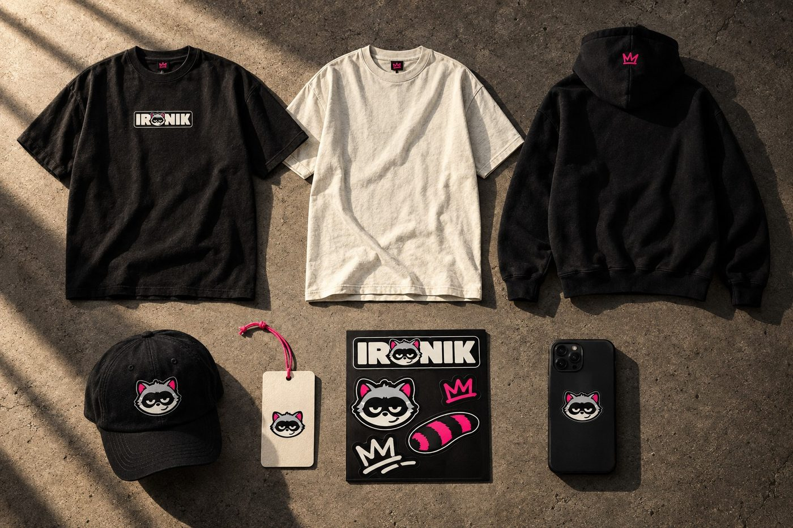
Uma marca, quatro jeitos.
O logo com a cabeça do Nik no "o" é a assinatura principal. Ao redor dele, versões para cada uso: empilhada, símbolo, mascote e tag.
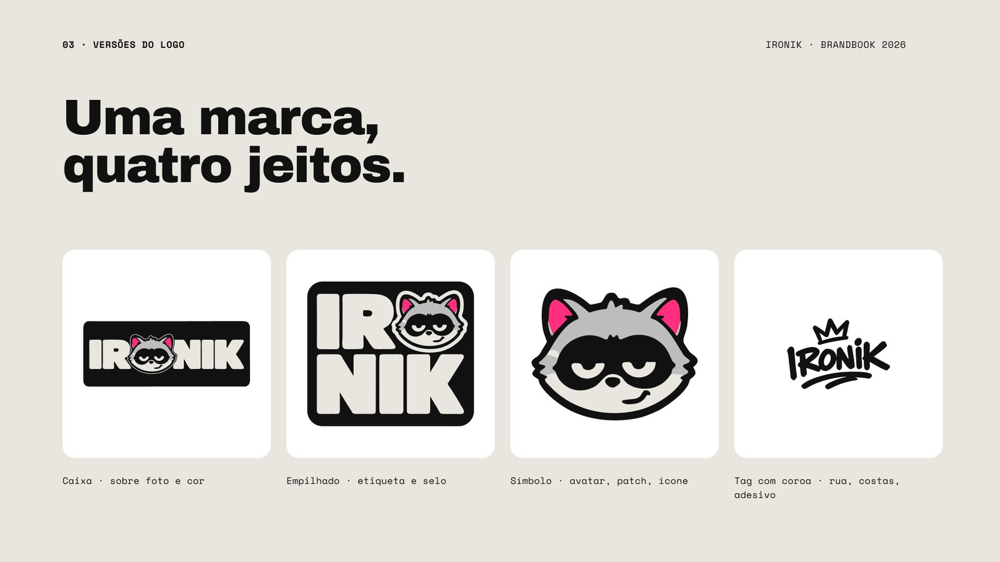
O Nik é o rosto da marca.
Do model sheet às expressões e poses, o mascote ganhou um sistema completo para campanha, embalagem e rede social.
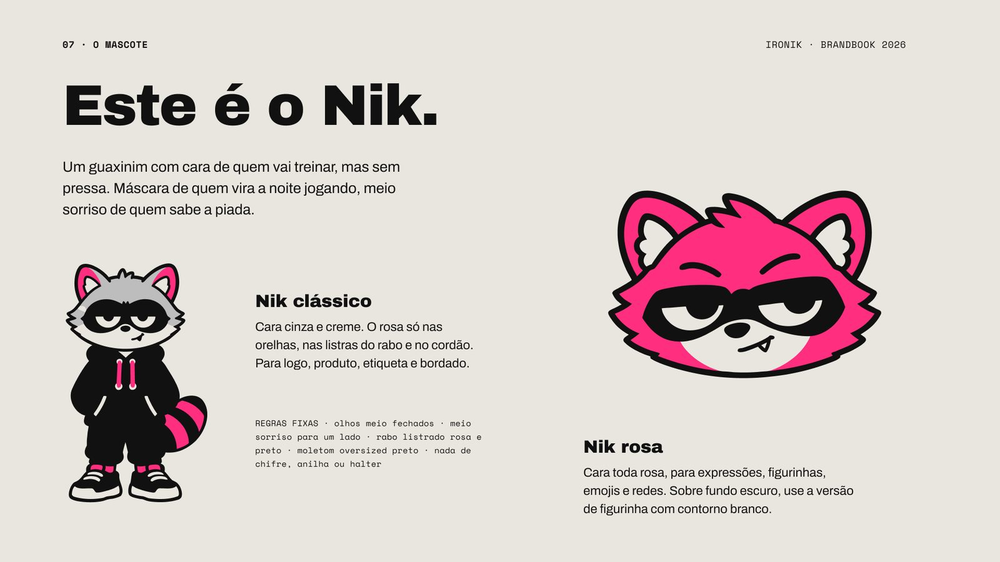
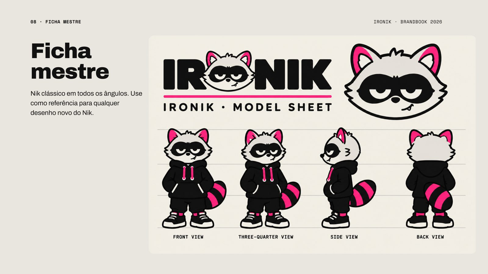
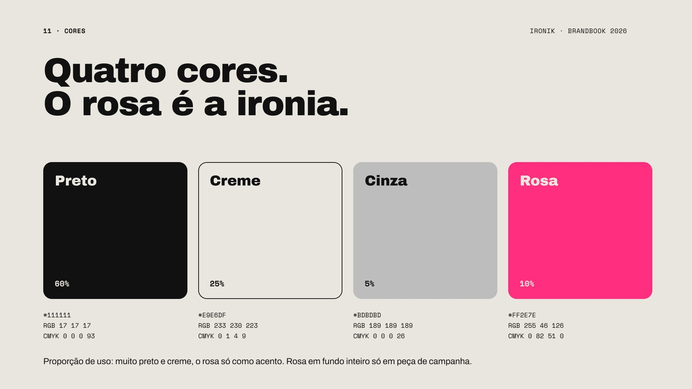
Na rua, na roupa, na tela.
A identidade aplicada em peças reais: lambe-lambe, vestuário, pop-up, embalagem e redes.
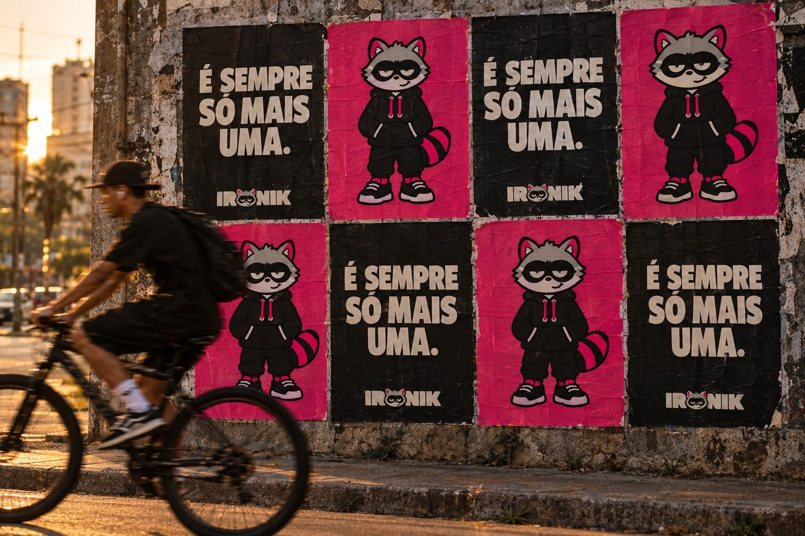
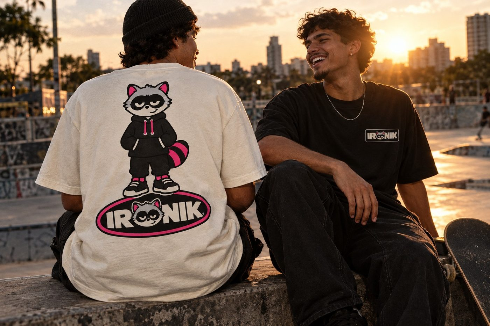
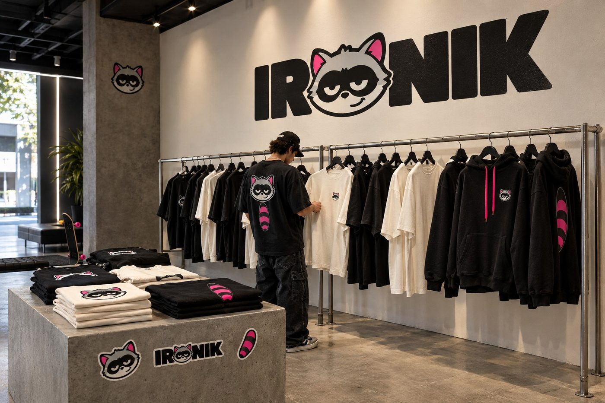
Do detalhe ao outdoor.
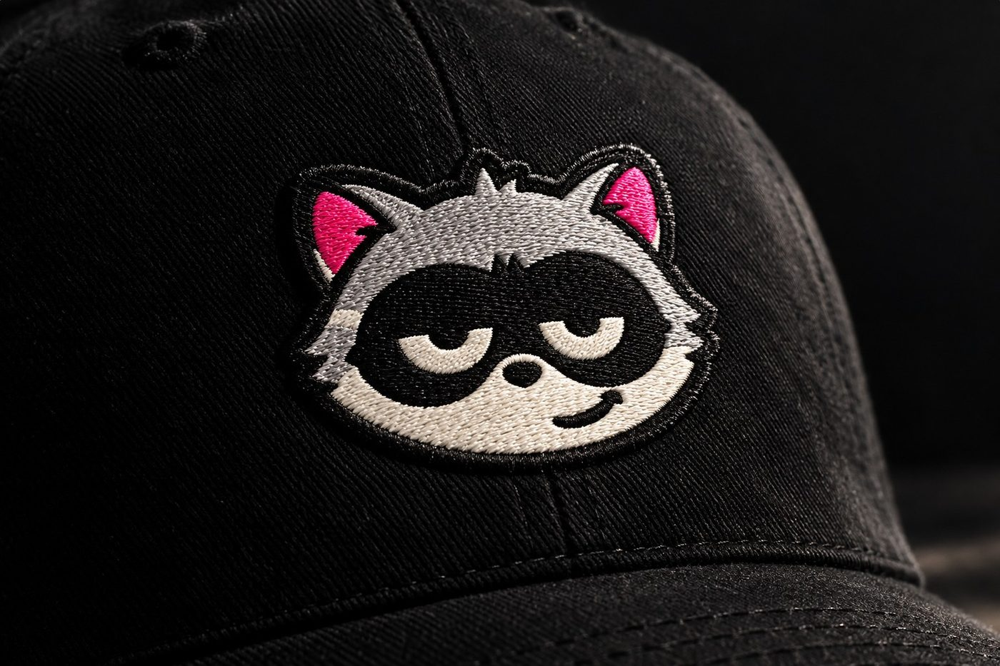
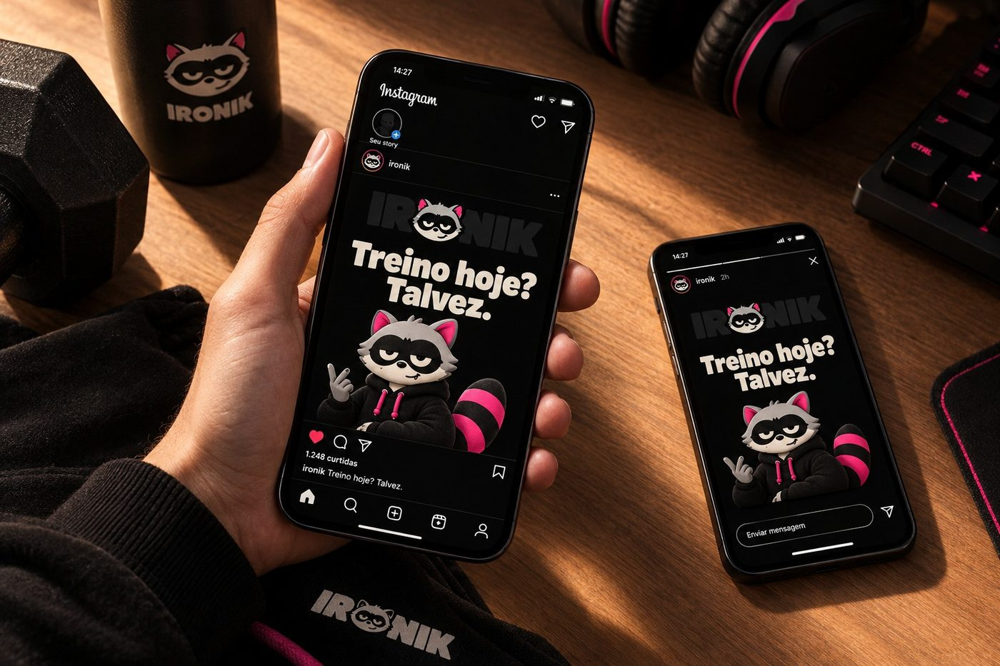
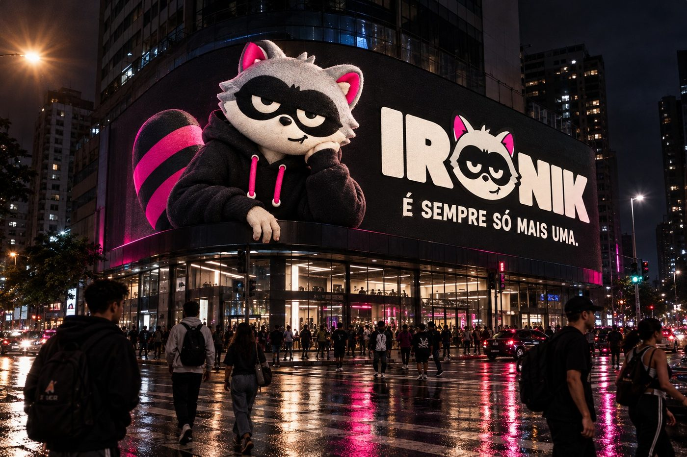
O brandbook reúne tudo.
Vinte pranchas com logo, mascote, cores, tipografia, voz e aplicações, para a marca crescer sem perder a cara.
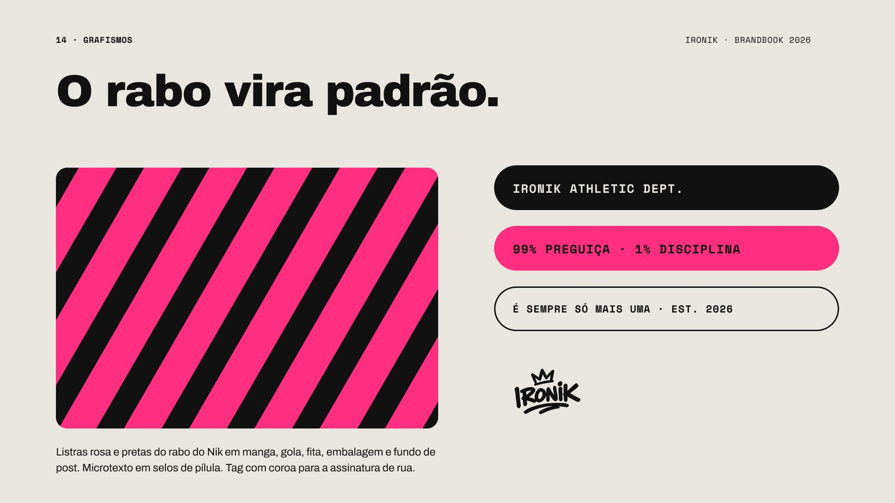
Continue explorando.
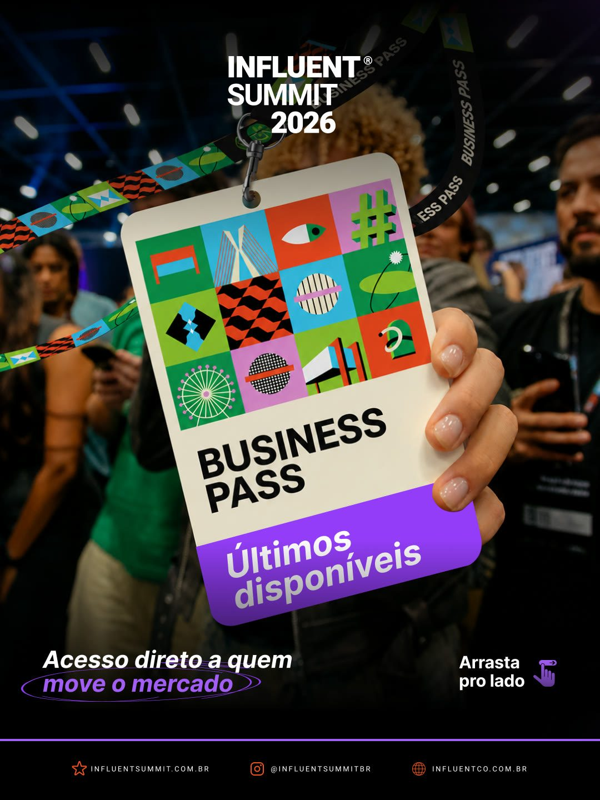
Conteúdo · Vídeo e motionInfluent Summit
Carrosséis, reels, vinhetas e vídeos de patrocinador para um dos maiores eventos da creator economy.
Marca · Tráfego · DesignCursa Mais
Identidade, criativos de Meta Ads e site para uma plataforma de cursos online.
Site · Design de interfaceProdução de sites
Design do site de uma plataforma de cursos: oferta clara, páginas por objetivo e captura de contatos.
Sua próxima campanha pode começar com uma ideia.
Conte à Reelô o que a sua marca precisa comunicar. A gente ajuda a definir o conceito, a produção e o escopo do projeto.